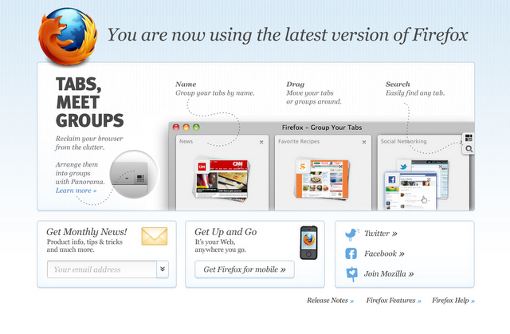
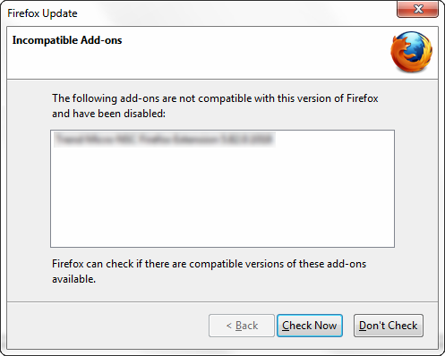
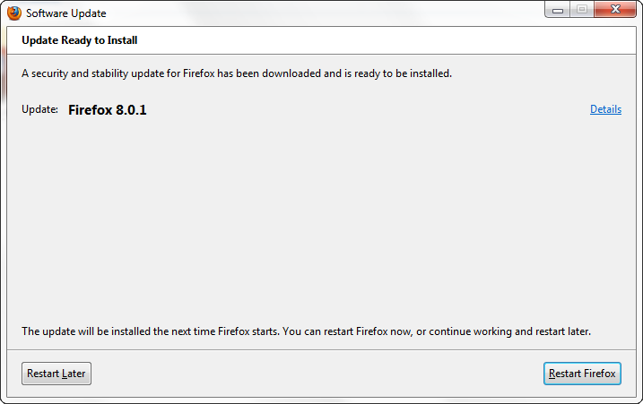
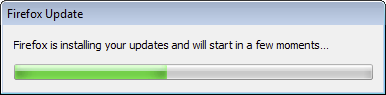

Mozilla Firefox Beta 版本開放下載測試！

【美商謀智訊息】以推動網路平等、自由、開放為宗旨的全球非營利組織－Mozilla 基金會，旗下著名之瀏覽器Firefox Beta 版本於美西時間26日釋出，提供Windows、Mac 和Linux 測試版本供使用者下載測試。此次的 Beta 版將著重在提升便利性的網路搜尋體驗。在首頁和分頁都做了更...
13 篇文章




